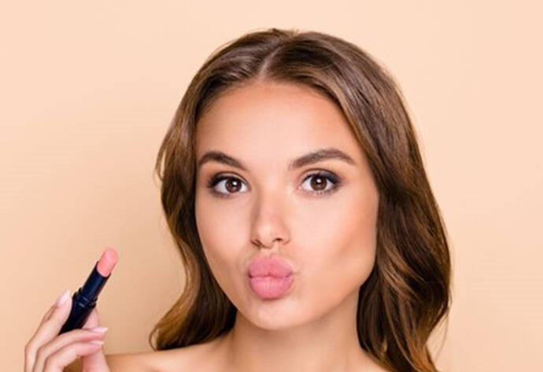
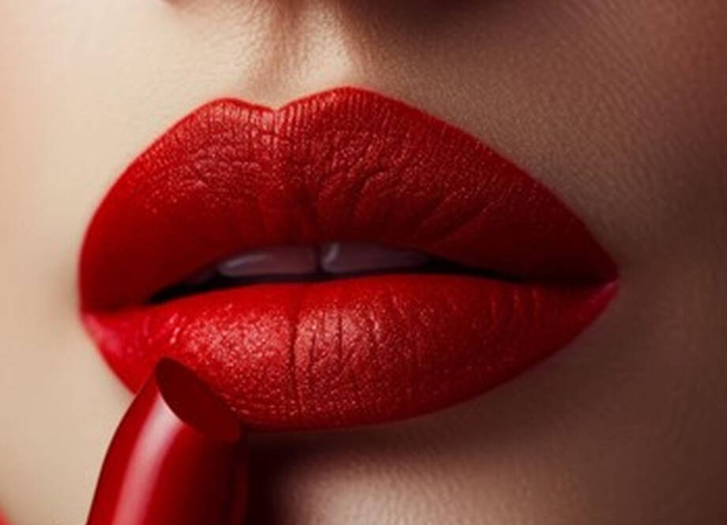
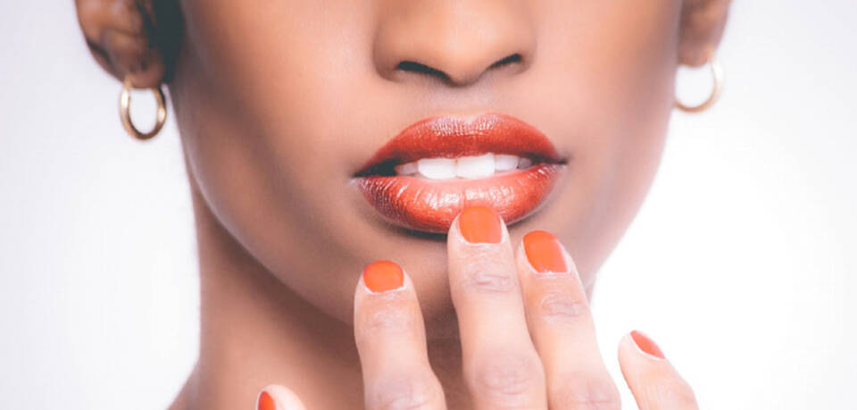

Cómo pintarse los labios

primero exfolia tus Labios para eliminar las pieles muertas,Tras la exfoliación, es importante hidratar los labios en profundidad. Aplica un bálsamo labial hidratante que nutra y proteja tus labios, dejándolos suaves y flexibles.na vez que tus labios estén suaves e hidratados, es hora de pasar a la acción;Delinea el contorno para definir la forma despues rellena con el pintalabios para un color intensoy finalmente retira el exceso para un acabado impecable
Cherry lips

Preparación: Exfolia e hidrata tus labios para conseguir una superficie lisa y uniforme. Utiliza un perfilador de labios en un tono similar al de tu labial para definir el contorno y evitar que el color se desborde.
Aplica el labial cherry, comenzando desde el centro de los labios hacia afuera.
Si buscas un acabado aún más intenso, puedes aplicar una segunda capa de labial.
Pintalabios para morenas

El pintalabios rojo pasión es uno de los más favorecedores para cualquier tono de cutis, pero en las pieles morenas ayuda a resaltar el color. Si utilizas un pintalabios de este tono, podrás aumentar el tamaño de tus labios, siempre que el producto sea mate o tenga textura cremosa. Es ideal para el día y la noche y Rosa y nude para un look discreto.